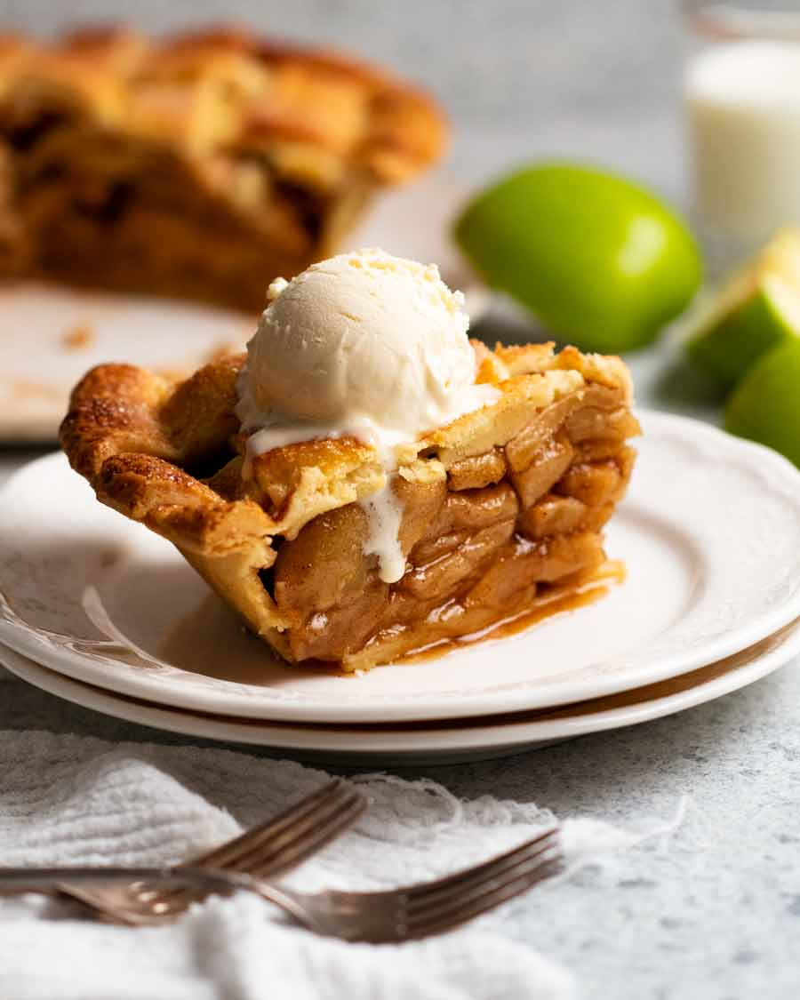

Apple Pie

Description
A delicious apple pie
This apple pie will make you feel like you are at grandma's house when you were a kid.
Ingredients
- 6 large apples
- 400g of all purpose flour
- A pinch of salt
- 200g of butter
- 100g of sugar
Steps
- Peel the apples and dice them into small pieces
- Mix flour, salt and sugar in a bowl
- Get a cooking tray and lay it down with cooking paper
- Pre-heat oven to 200 Celsius degrees
- Fill base of the tray with the flour mixture and then put diced apples. Lastly cover the top with the same flour mixture